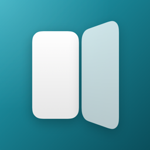

FoldzSupport
Can't find your answer? Email foldzapp@gmail.com. Include your iOS version and what you were doing.
Getting started
- Open Foldz and tap Get Started.
- Tap Add Log Unfold, then Add Shortcut.
- In the Shortcuts app, go to Automation and switch Log Unfold on.
- Back in Foldz, tap I Added It, then do the same for Log Fold.
- On the Test It screen, fold your phone, wait a second, and unfold it. Both checks turn green.
- Tap Finish, then Start Free Trial.
Setting up the automations by hand
If you'd rather build them yourself, tap Set it up by hand instead in Foldz, or:
- In Shortcuts, go to Automation and tap +. If it asks what you want your shortcut to do, tap ✕.
- In the list at the bottom, tap Automation, then under Display pick Opened or Closed.
- Leave it on When iPhone is Opened, with Notify off.
- Search Foldz, tap Log Unfold, then tap ‹ to save it.
- Repeat with Closed and Log Fold.
Common questions
My folds aren't being counted.
- In Shortcuts → Automation, make sure Log Unfold and Log Fold are both switched on. Automations added from a link start switched off.
- Open each one and check it says When iPhone is Opened (Log Unfold) or When iPhone is Closed (Log Fold).
- Run setup again from Settings → Re-run Setup in Foldz; its Test It screen shows whether each automation works.
Nothing was counted right after I restarted my phone.
iOS doesn't run automations until you unlock your phone once after it restarts, and it can hold them back for a minute or two after that. Folds in that window are logged together once iOS catches up, or missed if the phone wasn't unlocked yet.
Do folds count while my phone is locked?
Yes. The automations run whether or not the phone is unlocked (after the first unlock following a restart).
Why does "time unfolded" keep counting when the screen is off?
Foldz measures the hinge, not the screen: position time is how long the phone was open or closed. iOS doesn't tell apps when the screen turns off, so an open phone on your desk still counts as unfolded.
Will a banner appear every time I fold?
No, as long as Notify is off on both automations. It's off unless you turn it on.
Does Foldz drain my battery?
No. Nothing runs in the background. Each fold runs a tiny action that saves one entry and exits.
When does the free trial start?
When you tap Start Free Trial after setup, not when you install. It's a free in-app purchase that lasts 3 days and never charges you. After that, Foldz is $1.99 once for everything. Your folds keep being logged even if the trial ends, so unlocking shows your full history.
I already bought it. How do I restore it?
Tap Restore Purchases on the upgrade screen or in Settings, signed in with the Apple Account you bought it with. Family Sharing members get the unlock too.
How do I get a refund?
Apple handles refunds. Request one at reportaproblem.apple.com.
Can I get my data out?
Yes. Settings → Export CSV saves every fold and unfold as a spreadsheet file.